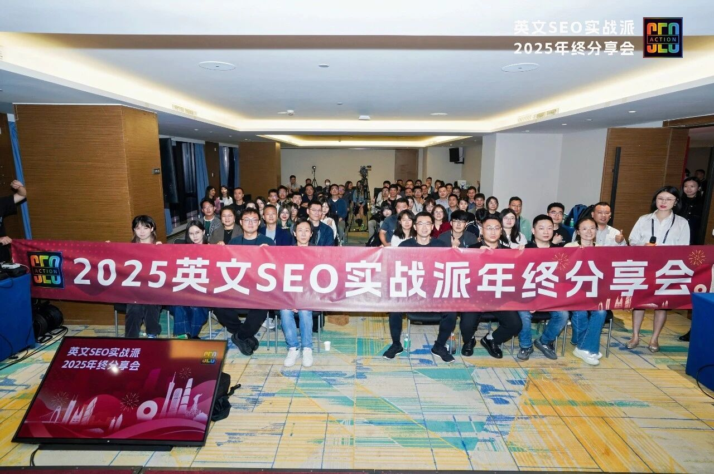
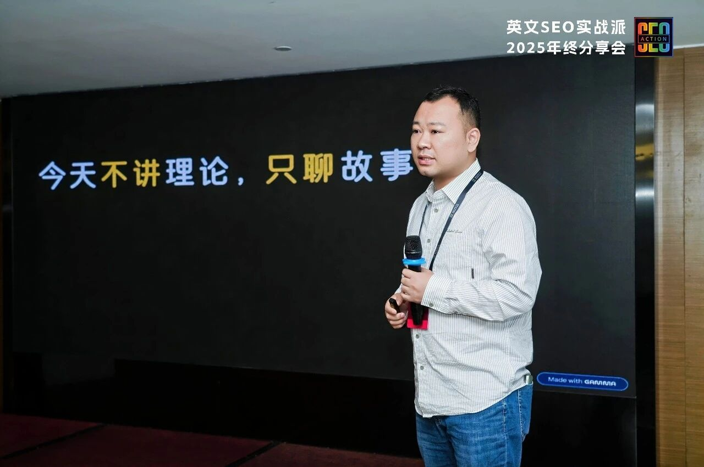
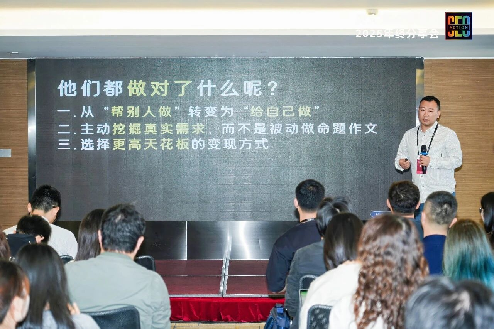
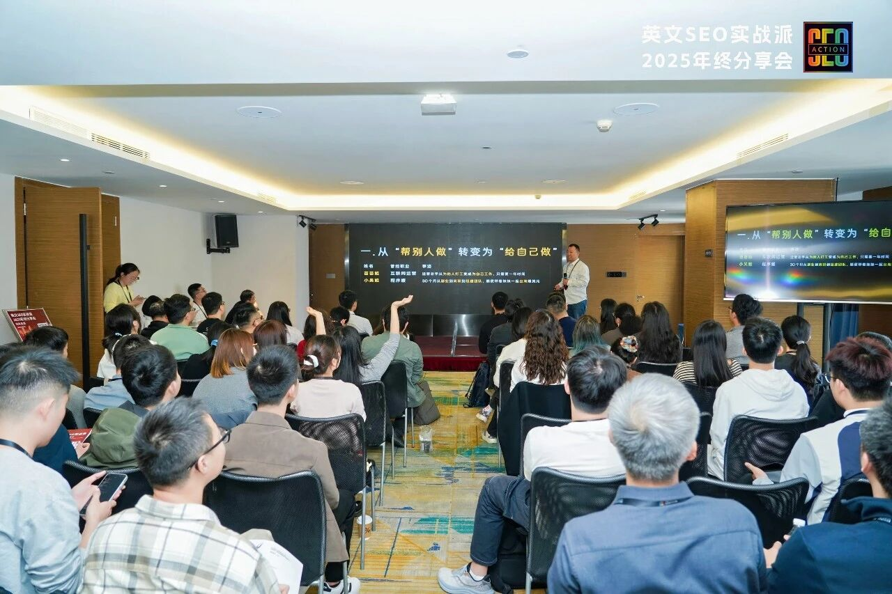
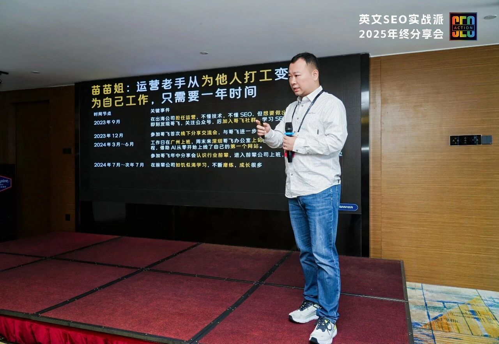
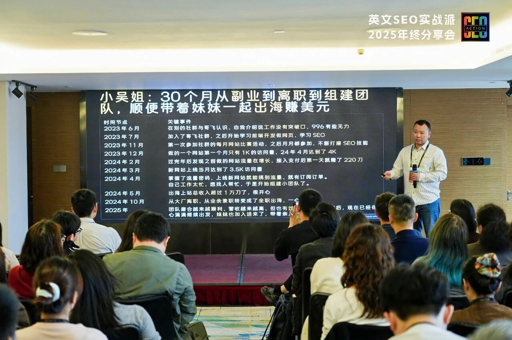
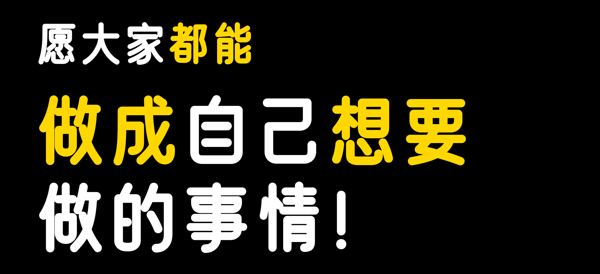
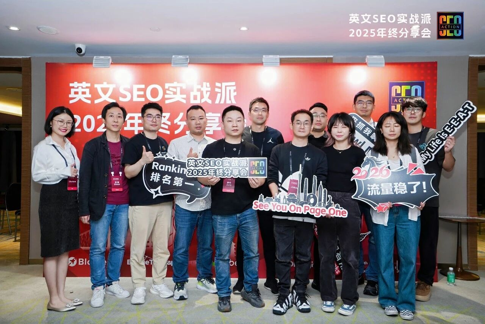

大家好，我是哥飞。

昨天，12 月 20 日，周六，哥飞受 公众号：英文 SEO 实战派 作者 John 的邀请，在他的年终分享会里做了一次分享，跟以往我的分享不太一样的是，这次 John 让我讲讲赚钱故事，可能会更吸引人。
以下是当时的分享稿转成的文字稿，但不是我分享说的逐字稿哈，分享给大家。

今天不讲理论，只聊故事。
跟大家聊聊哥飞身边发生的， 8 位普通人通过 SEO 改变人生轨迹的真实故事。
在接触 SEO 之前，他们是程序员、产品经理、运营甚至是土木工程师，接触了 SEO 之后，他们都是出海赚钱小能手。

他们都做对了什么呢？
- 之一：从"帮别人做"转变为"给自己做"
- 之二：主动挖掘真实需求，而不是被动做命题作文
- 之三：选择更高天花板的变现方式
- 之四：大量实践，快速验证
- 之五：借助社区的力量，分享交流，共同进步
- 之六：越挫越勇，坚持就是胜利

做对之一：从"帮别人做"转变为"给自己做"

苗苗姐：运营老手从为他人打工变成为自己工作，只需要一年时间
曾经职业：互联网运营
2023 年 9 月 ，她在出海公司担任运营，不懂技术，不懂 SEO，但想要做出自己的事业，在即刻发现哥飞，关注公众号，后加入哥飞社群，学习 SEO。
2023 年 12 月 ，她参加哥飞首次线下分享交流会，与哥飞进一步认识，变成线下朋友。
2024 年 3 月～6 月 ，工作日在广州上班，周末来深圳哥飞办公室上站，逼迫自己从零开始学编程，借助 AI 从零开始上线了自己的第一个网站。参加哥飞年中分享会认识行业前辈，进入前辈公司上班，担任 SEO 运营岗位。
2024 年 7 月～次年 7 月 ，在前辈公司如饥似渴学习，不断磨练，成长很多。
2025 年 1 月 ，业余时间不忘做自己网站，慢慢收入超过主业，目前网站月访问量 50 万。
2025 年 7 月 ，从前辈公司离职，在广州组建团队，基于成功经验复制，运营更多站点。

小吴姐：30 个月从副业到离职到组建团队，顺便带着妹妹一起出海赚美元
曾经职业：程序媛
2023 年 6 月 ，她在别的社群与哥飞认识，自我介绍说工作没有突破口，996 有些无力。
2023 年 7 月 ，加入了哥飞社群，之后开始学习前端开发做网页，学习 SEO。
2023 年 11 月 ，第一次参加社群的每月网站比赛活动，之后月月都参加，不断打磨 SEO 技能。
2023 年 12 月 ，做的一个网站第一个月只有 1K 的访问量，24 年 4 月达到了 4K。
2024 年 2 月 ，过完年后发现之前做的网站流量在增长，接入支付后第一天就赚了 220 刀。
2024 年 3 月 ，新网站上线当月达到了 3.5K 访问量。
2024 年 4 月 ，掌握了流量密码，上线新网站就能搞到流量，就有订阅订单。自己工作太忙，想找人帮忙，于是开始组建小团队了。
2024 年 5 月 ，出海上站总收入超过 1 万刀了，很开心。
2024 年 10 月 ，从大厂离职，从业余兼职转变成了全职出海，一心上站。
2025 年 ，团队磨合越来越顺利，营收越来越高，但也有过迷茫期，熬过去后，现在已经信心满满继续出发，妹妹也加入进来了，带着亲人一起出海赚美刀。
做对之二：主动挖掘真实需求，而不是被动做命题作文
大兵哥：SEM + SEO 双管齐下，两年多从单枪匹马到组建团队开公司
曾经职业：程序员
2023 年初 ，从大厂离职，想找点事做，投资过充电桩，每个月有几千块收入。
2023 年 10 月 ，加入哥飞社群，身为后端开发，在 AI 帮助下从零开始学前端做网站。
2023 年 11 月 ，做的小游戏网站在巴西拿到了流量，日 UV 过万了，靠 Adsense 变现。
2024 年 3 月 ，新站上线 10 天从谷歌拿到了 4 万点击，靠用户付费订阅首次日入超过千刀。
2024 年 5 月 ，新站上线 10 天从谷歌拿到了 33 万点击，Adsense 日收入 200 刀。
2024 年 8 月 ，新站上线 12 天从谷歌拿到了 168 万点击。
2024 年 12 月 ，一边靠 SEO 获取流量，一边通过 SEM 放大流量。通过多个用户付费订阅网站实现了月入万刀。
2025 年 4 月 ，租办公室，注册公司，组建团队。
2025 年 12 月 ，五人小团队，运营着多个有稳定收入的 AI 工具订阅网站。
土木哥：深圳土木公司副总从零开始学编程和 SEO，半年就一飞冲天
曾经职业：土木工程师
2020 年～2025 年 ，土木工程专业毕业，一路做到了深圳某知名土木私企副总经理。
2025 年初 ，土木不好做，想再找一条路，尝试各种副业，做过公众号爆文项目，没拿到结果，但因为文章生成需要用到 AI，从而了解到了 AI+Web 出海项目。
2025 年 4 月 ，加入了哥飞社群，发现好多都不懂，于是缺什么补什么，缺产品思维，就报了刘小排的产品课，缺技术就报了熠辉的 AI 编程课。
2025 年 6 月 ，杭州、深圳等到处跑，像一块海绵一样不断学习吸收新东西，6 月底参加哥飞年中 Hackathon 活动，交了个半成品上来。
2025 年 7 月～8 月 ，继续不断做网站练习，不少半成品，但终于有正式上线拿到流量的网站了。
2025 年 9 月 ，最新做的一个网站终于出单了，但也问题多多，甚至因为鉴权 Bug 被人刷了好多 API Token。
2025 年 10 月 ，Stripe 被封，紧急改成 Creem，中间断档一星期。
2025 年 12 月 ，某关键词稳稳排到了某搜索引擎第一名，月收入是之前上班工资 N 倍。
做对之三：选择更高天花板的变现方式
苏老师：产品经理两年赚到 100 万刀+，靠的就是 AI + SEO + B 端经验
曾经职业：B 端产品经理
2023 年 10 月 ，看了哥飞"养网站防老"系列教程，觉得可以试试看，尝试用 AI 编程学做网页，学习 On Page SEO，学习怎么搞外链。
2023 年 11 月 ，7 天时间做的一个音乐下载站，靠 Adsense 赚到了第一个 100 美金。
2023 年 12 月 ，靠 GPT 3.5 辅助编程，做了漫画翻译网站，头两个月订阅收入就超过了之前几个网站的 Adsense 收入之和，发现原来订阅站这么赚钱。
2024 年上半年 ，开始复制，多多上站，做了简历、游戏、图片等大需求市场，逐步在 C 端达到了月入万刀。
2024 年下半年 ，在 B 端通过提供 API 能力，斩获 20 万、30 万、60 万美元大合同。
2025 年 ，稳定年收益百万刀，目前持续探索工作流、视频生成等垂直大市场且已做出有稳定盈利网站。
小杨哥：20 个月从不懂代码的产品经理通过 SEO 变成开公司的杨总经理
曾经职业：产品经理
2024 年 1 月 ，从大厂离职，本来想找一份 AI 相关产品经理工作。
2024 年 3 月 ，机缘巧合进入了哥飞社群，之后开始学习编程，学习做网页，学习 SEO。
2024 年 5 月 ，学会了编程，到哥飞办公室开始上站，不断练习 SEO 技能。
2024 年 6 月 ，通过 Adsense 赚到了第一刀，一年多过去了这个站到现在还有收入。
2024 年 7 月 ，实现了月入一万人民币，曾经因为不如大厂薪资而迷茫过。
2024 年 12 月 ，通过 AI 工具站实现了月入一万刀，首次日入千刀，动力十足。
2025 年上半年 ，好消息不断，营收不断上升，依然还是一人公司状态。
2025 年 9 月 ，租下办公室，组建团队，开始规模化之路。
做对之四：大量实践，快速验证
小南姐：经历和经验都很丰富的安卓开发老手靠着 SEO 在 Web 里找到了第二 春
曾经职业：安卓开发
2022 年 ，做安卓开发，上了一些小游戏和小应用，到处复制粘贴，没有竞争力，没赚到钱，后来因违规被封号。
2024 年 3 月前 ，偶然看到哥飞公众号，感觉找到了方向。囊中羞涩，5 天后问妈妈借了 1000 块入群。
2024 年 3 月 ，进群后每天看群聊天记录、公众号和论坛。同时全天候带孩子，经常通宵，每天吃一顿，还背着债务，"天天想死的心都有"。
2024 年 4 月～12 月 ，学习进度慢，连关键词怎么挂、怎么挖都不懂。但信念支撑着："做一个网站没成，再做一个，再不成再做"。陆陆续续做了六七十个网站，大部分没有流量。
2025 年 1 月 ，流量终于爆了，服务器被挤崩，求助群友才解决问题。
2025 年上半年 ，各种打击：收款账户被封，躺了 3 天没缓过来；存用户数据服务器未知原因未到期就被注销，但没被打倒。
2025 年下半年 ，缓过来继续搞，收入稳定，高峰月收入超 5 万美金。也终于有时间来调理前两年熬虚的身体。
小陈哥：技术小子毅然从新加坡回到老家，皆因学会了 SEO，时间和空间都自由了
曾经职业：技术极客
2024 年之前 ，大学差点毕不了业，但因技术强被老板带去了新加坡，陪伴公司成长，搭起了公司 AI 基建。
2024 年 4 月 ，加入哥飞社群，疯狂学习中，把社群里各种历史沉淀资料都拿来学习。
2024 年 5 月 ，基于自身经验，想要搭建 AI 模型能力测评网站，因发现做得更好的竞品而放弃，改成先做 AI 导航站练手，不断用内页练习如何做好 On Page SEO，拿到关键词曝光和点击。
2024 年 6 月 ，一边上内页，一边研究社媒运营，先从中文社媒开始，后做英文社媒。
2024 年下半年 ，游戏站、资讯站、AI 对话工具站、视频站、图片站，做了很多但都没啥大效果，但失败也积累了很多经验，通过跟更多的群友交流认识到自己的不足，也在不断学习广告投放，在 SEO 短期做不上去时，SEM 可以帮助拿到流量。
2025 年上半年 ，辞职，从新加坡回国，在哥飞办公室借工位，继续上站，度过了最艰难的时期，终于抓住了几个关键词机会，通过广告投放把流量做起来了，ROI 打正。
2025 年 7 月～9 月 ，回到老家小城市，打磨产品，继续推广搞流量。
2025 年 10 月～12 月 ，从老家到杭州，发现跟同行更多的交流才有更大的成长，也开始组建团队，有了实习生分担基础工作，目前不断前进中。
做对之五：借助社区的力量，分享交流，共同进步
不要一个人闷头做，而是跟大家一起多多交流，线下活动、线上比赛、微信私聊、组队上站。
- 小南姐 服务器崩了，求助群友解决，任何问题都有人帮忙
- 土木哥 到处跑，跟同行交流，如饥似渴学习
- 小陈哥 "通过跟群友交流认识到自己的不足"，从交流中学习到很多
- 苗苗姐 参加线下分享会，认识前辈，进入前辈公司学习
- 小吴姐 月月参加社群比赛，不断打磨技能
做对之六：越挫越勇，坚持就是胜利
小 南姐的挫折清单：
- 安卓被封号
- 六七十个站大部分没流量
- 服务器被挤崩
- 收款账户被封
- 服务器被莫名注销
土木哥的挫折清单：
- 不懂互联网
- 不懂编程、不懂 SEO
- 半成品交了好几个
- 被人刷 API Token
- Stripe 被封，紧急换支付
想要赚到钱，需要有一些转变
- 帮别人做 SEO → 给自己做 SEO
- 被动做命题作文 → 主动挖掘真实需求
- Adsense 变现 → 用户付费订阅变现
- 纯 SEO 流量 → SEM 流量也要
曾经小杨哥，也迷茫过
离职后靠着努力，终于月入 1 万人民币时，也"因为不如大厂薪资而迷茫过"。
但他没放弃，5 个月后月入 1 万美金，现在已经开公司成为杨总经理了。
曾经苏老师，也从小钱赚起过
第一个站靠 Adsense，赚到了第一个 100 美金。
但他没停下，继续尝试通过订阅变现，两年后年入超 100 万美金。
曾经小吴姐，也无力过
大厂 996，"工作没有突破口，有些无力"。
但她没放弃，30 个月后全职做自己的事业，还带着妹妹一起出海赚美元。
曾经大兵哥，也焦虑过
从大厂离职后不知道干啥，投资充电桩，每月只有几千块收入。
但他没放弃，两年多后组建五人团队，运营多个稳定盈利的订阅站。
曾经土木哥，也被各种坑折腾过
半成品、Bug、API 被刷、Stripe 被封，什么坑都踩了。
但他没放弃，8 个月后关键词排到第一，月收入是副总时工资的 N 倍。
曾经小陈哥，也反复失败过
游戏站、资讯站、AI 工具站……做了很多，都没啥效果。
但他没放弃，18 个月后 ROI 打正，时间和空间都自由了。
曾经苗苗姐，也是从零开始过
不懂技术，不懂 SEO，工作日上班，只有周末能做站。
但她没放弃，22 个月后收入超过主业，网站月访问量 50 万，组建团队。
曾经小南姐，也绝望过
问妈妈借钱入群，全天候带娃，背着债务，"想死的心都有"。
但她没放弃，做了六七十个站后终于爆了一个，之后越做越顺，高峰月入超 5 万美金。
他们都曾迷茫过、失败过、绝望过，但都没放弃过。
如果要说，他们做得最对的是什么？我会认为是 坚持 。
决心、信心、耐心、恒心，缺一不可！
认定一件事情，然后用坚定的信念，持之以恒的做下去，直到成功！
愿大家都能做成自己想要做的事情！


文末补充
好几个朋友的故事线里都出现了哥飞办公室的身影，这里跟大家解释一下。
最开始我自己团队人少，办公室里有不少空位，所以我让一些刚起步的朋友来我办公室借用工位，收他们 1500 元一个月的工位费，然后跟他们随时交流，天天一起吃饭时讨论。
那时，大家都还才开始，都没赚到钱，所以各种信息都可以共享，各种经验都可以交流，在这个过程中友谊不断加深，互相都积累下来了足够的信任。
信任到可以打开后台（GSC 后台、Stripe后台、网站后台等）互相分享的程度。
后来我自己的团队成员一直在增长，工位越来越少了，虽然我们依然可以互相看后台看收入，但是毕竟我这边同事多了，很多话不方便讲了，而且大家也都有各自组建自己小团队的需求了，于是陆续都离开我的办公室了。
再加上我自己团队成员也还在一直增加，工位不够，一开始还能通过加张桌子来解决，后来桌子都加不了之后，我就把隔壁办公室都租下来了。
在这之后，就没有再开放任何工位给群友了。
我把分享稿发到社群里之后， 有群里朋友说，是否可以再来我这里，我只能说很抱歉，实在不行了。
大家如果有报团取暖、共同进步的需求，可以去生财在杭州、北京、深圳的共享工位，北京的是刘小排老师在运营维护的，深圳的良辰美等优秀群友都在，都很推荐大家去，不过需要生财社群成员才能申请，还需要做一定的面试。